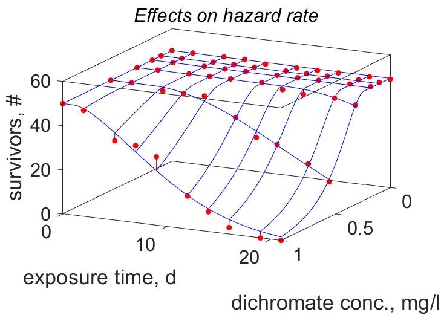

Bi-variate data
Bi-variate data is a matrix of dependent variables, but since each row typically has an associated independent data point, bi-variate data is specified with the associated first independent variable specified as first column of the matrix. The second independent variable is specified as auxiliary data of the typetreat, not as a first row of the data-matrix.
The reason is that it can be quantitative or qualitative, such as "female" and "male".
This might also apply to the first independent variable, which needs to be numeric, but we might not allow interpolation for presentation purposes.
An extra complicating factor is that particular data-points might be missing.
For this reason the code accepts such missing data if specified as NaN (Not a Number).
Other auxiliary data might be associated to any data, so also to bi-variate data.
The predict-file should specify the prediction for all dependent variables in matrix-form (and not include the independent variables).
Bi-variate data does not have a separate coding system, since the underscore-extension of uni-variate data gives suffient possibilities to specify codes.
Specifying bi-variate data
Since the difference between bi-variate and multi-variate data is mainly in how the data is used for predictions, the following specification applies to both types of data.

Suppose that we want to specify time-weight data for females and males in data matrix data.tW, which now has 3 columns.
The auxiliary data of the type treat is specified as a cell-string of 2 elements: auxData.treat.tW = {1, {'f', 'm'}}.
The second element specifies the second independent variable, which can be a vector of values, but is here a cell-string of labels.
The first element is a scalar, which controls the way in which the results are presented.
It can have the values
- 0 for no interpolation in the first as well as the second independent variable; the result is a plot with markers; filled dots for data, open ones for predictions. The second element of treat is here optional; it is used to avoid interpolation in the first independent variable. A legend will be plotted in a separate figure.
- 1 for interpolating the first independent variable, but not the second one: the results is a plot with filled dots for the data and curves for the predictions. The second element of treat can be a vector of values or a cell-string of labels. A legend will be plotted in a separate figure.
- 2 for interpolating the first as well as the second independent variable; the result is a plot with filled dots for the data and a 3-dim mesh for the predictions. The second element of treat must here be a vector of values. The data-points are connected to the mesh in red if above the mesh, or blue under. Matlab allows rotation of the plot in the tool-bar of the figure.
treat is added directly to auxData, but this is more typically done in 2 steps, by first filling treat
and later in the mydata-file adding treat to auxData by auxData.treat = treat.
You can optionally specify a title for the legend by label.treat.tW = 'gender'; and later add label to txtData (as usual).
So if the first element of treat is 0 or 1, a legend is produced, using the labels as specified in the second element of treat.
With 3 columns, the label for the independent and the dependent variable can be extended with a third label that is then used for the legend.
If, however, the units are also 3 cells long, no legend is produced, but two different y-axis are written, see multi variate data.
Entries giving examples of specification of bi- and multi-variate data in the mydata-file: Bolinopsis mikado (first element of treat is 0), Cuon alpinus (first element of treat is 1), Culex_pipiens (first element of treat is 2) and Dolioletta gegenbauri (first element of treat is 2). The last example concerns several bi-variate data sets. Notice that the predict-file needs to receive the auxiliary data treat for each bi-variate data set, even if the values are the same. This is because the predict file is called several times to get predictions points as well as curves. The predict-file should specify the prediction for all dependent variables in the form of a matrix.
Like for all plots, you can specify a title and/or a subtitle, e.g. txtData.title.tW = 'data for females, males'.
Titles are part of the plot, but subtitles only appear in the modal-presentation in html on the AmP website.
The latter might be more attractive if you want to use the plot for publication.
An extra complicating factor is that particular data-points might be missing.
For this reason the code accepts such missing data if specified as NaN (Not a Number).
Other auxiliary data might be associated to any data, so also to bi-variate data.